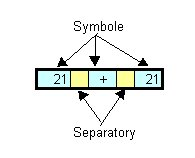

2. Rozbiór tekstów
Bardzo czêsto w programowaniu wystêpuj± sytuacje, gdy trzeba rozbiæ, roz³o¿yæ
jaki¶ tekst (napis) na poszczególne wystêpuj±ce w nim symbole (np. s³owa).

Napis taki mo¿e wygl±daæ nastêpuj±co: "21 + 21"
W przyk³adzie z liczbami separatorami bêd± spacje. Do wy³uskiwania symboli z ³añcuchów znakowych s³u¿y klasa StringTokenizer z pakietu java.util.
Po to by dokonaæ rozbioru tekstu - tworzymy obiekt klasy StringTokenizer,
podaj±c jako argument konstruktora - tekst do rozbioru np. String expr = "21 + 21"; StringTokenizer st = new StringTokenizer(expr);
Ta postaæ konstruktora zak³ada domy¶lnie, ¿e separatorami s± znaki z nastêpuj±cego zestawu
Wy³uskiwanie symboli odbywa siê sekwencyjnie poczynaj±c od pocz±tku ³añcucha. S³u¿y temu metoda nextToken(), która zwraca kolejny symbol jako String. Pierwsze wywo³anie tej metody
zwróci pierwszy symbol, nastêpne - bêd± zwracaæ kolejne symbole ³añcucha.
String s1 = st.nextToken(); // napis "21" String s2 = st.nextToken(); // napis "+" String s3 = st.nextToken(); // napis "21"
Gdy nie ma ju¿ symboli "do zwrotu" - wywo³anie nextToken() spowoduje powstanie wyj±tku NoSuchElementException.
while (st.hasMoreTokens()) {
Sring s = st.nextToken();
// ... tu co¶ robimy z s
}
Wiedz±c to wszystko mo¿na teraz napisaæ program, który w oknie dialogowym
prosi u¿ytkownika o wprowadzeia liczby c±³kowitej, spacji, operatora, spacji
i drugiej liczby i wykonuje ¿±dan± operacjê arytmetyczn± na tych dwóch liczbach. Przed lektur± dalszego tekstu proszê to zadanie rozwi±zaæ samodzielnie
Rozwi±zanie:
import java.util.*;
import javax.swing.*;
public class Oper {
public static void main(String[] args) {
String normalQuest = "Liczba1 op Liczba2",
errorQuest = "Wadliwe dane. Jeszcze raz.\n" + normalQuest,
quest = normalQuest;
String expr;
while ((expr = JOptionPane.showInputDialog(quest)) != null) {
StringTokenizer st = new StringTokenizer(expr);
if (st.countTokens() != 3) {
quest = errorQuest;
continue;
}
String snum1 = st.nextToken(),
sop = st.nextToken(),
snum2 = st.nextToken();
int num1 = Integer.parseInt(snum1),
num2 = Integer.parseInt(snum2),
res = 0;
char op = sop.charAt(0);
switch (op) {
case '+' : res = num1 + num2; break;
case '-' : res = num1 - num2; break;
case '*' : res = num1 * num2; break;
case '/' : res = num1 / num2; break;
default: {
quest = errorQuest;
continue;
}
}
JOptionPane.showMessageDialog(null, "Wynik = " + res);
quest = normalQuest;
}
System.exit(0);
}
}
Inna postaæ konstruktora klasy StringTokenizer pozwala na okre¶lenie zbioru
separatorów, które bêd± s³u¿yæ do wyró¿niania symboli. Przed lektur± dalszego tekstu proszê to zadanie rozwi±zaæ samodzielnie
Mo¿liwe rozwi±zanie:
import java.util.*;
public class Words {
private String[] words; // tablica slów
private String maxLenWord; // s³owo o max d³ugo¶ci
private String minLenWord; // s³owo o minimalnej d³ugo¶ci
// Konstruktro
public Words(String txt) {
// Uwzglêdniamy bogaty zestaw separatorów s³ów
StringTokenizer st = new StringTokenizer(txt, " \t\n\r\f.,:;()[]\"'?!-{}");
words = new String[st.countTokens()]; // utworzenie tablicy s³ów
int maxL = 0; // max dlugo¶æ
int minL = 10000; // min d³ugo¶æ
int i = 0; // indeks w tablicy
while (st.hasMoreTokens()) { // dopóki s± s³owa
String s = st.nextToken();
int len = s.length();
if (len > maxL) { // maksymalna d³ugo¶æ ?
maxL = len;
maxLenWord = s;
}
if (len < minL) { // minimalna d³ugo¶æ ?
minL = len;
minLenWord = s;
}
words[i++] = s; // s³owo -> do tablicy; zwiêkszenie indeksu
}
}
// Zwraca liczbê s³ów
public int getWordsCount() {
return words.length;
}
// Zwraca i-te s³owo (liczymy od 1)
// je¶li podano wadliwy indeks - zwraca null
public String getWord(int i) {
return (i < 1 || i > words.length) ? null : words[i-1];
}
// Zwraca tablicê slów
public String[] getWords() {
return words;
}
// Zwraca s³owo o max d³ugo¶ci
public String getMaxLenWord() {
return maxLenWord;
}
// Zwraca s³owo o min d³ugo¶ci
public String getMinLenWord() {
return minLenWord;
}
}
I klasa testuj±ca:
import javax.swing.*;
class TestWords {
public static void main(String[] args) {
String txt;
while ((txt = JOptionPane.showInputDialog("Wpisz tekst")) != null) {
Words w = new Words(txt);
int n = w.getWordsCount();
say("Liczba s³ów: " + n);
say("Kolejne s³owa: ");
for (int i=1; i <= n; i++) say(w.getWord(i));
say("S³owo o numerze n+1: " + w.getWord(n+1));
say("Kolejne s³owa: ");
String[] wrds = w.getWords();
for (int i=0; i < wrds.length; i++) say(wrds[i]);
say("Najdlu¿sze s³owo: " + w.getMaxLenWord());
say("Najkrótsze s³owo: " + w.getMinLenWord());
}
System.exit(0);
}
static void say(String s) {
System.out.println(s);
}
}
Klasa StringTokenizer dostarcza programi¶cie jeszcze pewnych dodatkowych
mo¿liwo¶ci (np. zmianê separatorów pomiêdzy kolejnymi operacjami wy³uskiwania
symboli; zwracanie nie tylko symboli, ale i separatorów w wyniku odwo³ania
nextToken()).
|